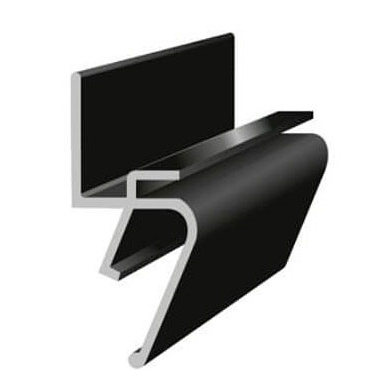
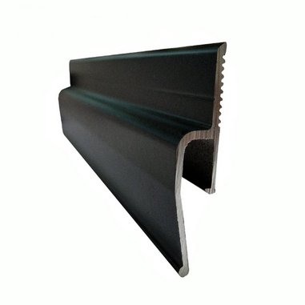
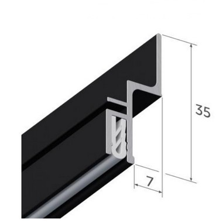

Тіньова натяжна стеля

Наша компанія Nova Stelya пропонує киянам і жителям області новинки в сфері натяжних стель – тіньові натяжні стелі.
Ціни на тіньову натяжну стелю в Києві
| ✅ Тіньова стеля у коридор: | від 3200 грн. |
| ✅ Тіньова стеля на кухню: | від 5100 грн. |
| ✅ Тіньова стеля до спальні: | від 7000 грн. |
| ✅ Тіньова стеля у вітальню: | від 8000 грн. |
Суть тіньових натяжних стель
Ця новинка усуває один з небагатьох недоліків натяжних стель. У разі нерівних стін натяжне полотно цю нерівність підкреслить. Відбувається це через те, що саме полотно ідеально рівне і має іншу фактуру і колір, в порівнянні зі стіною. Тому будь-яка нерівність стає більш помітною. А якщо використовується ще й декоративна вставка, яка закриває паз в багеті, через який заводиться натяжне полотно, то нерівність ще більш стає видимою.
Тіньова натяжна стеля вирішує цю проблему кардинально. У неї відсутнє стикування полотна зі стіною. Залишається зазор шириною 6 мм. Візуально здається, що стеля ширяє в повітрі. Виглядає дуже свіжо і оригінально.
Конструкція тіньової натяжної стелі
Такий ефект ширяння досягається за рахунок особливої конструкції багетів, за допомогою яких натяжне полотно кріпиться до стін. В даний час існує три їх види:
- EuroKraab і Euroflexy для плівкових стель;
- Euroslott - для тканинних стель.
Профіль EuroKraab

Їх розміри вказані на малюнку. Ефект ширяння досягається за рахунок того, що ребро профілю на якому розташований паз для фіксації натяжної полотна різко відхилене в сторону від стіни. Тобто полотно його закриває і робить для спостерігача знизу невидимим.
Сам профіль пофарбований в чорний колір, тому все, що вище цього ребра теж невидиме в густій тіні – між полотном і базовою стелею світла немає. Тому таку натяжну стелю і назвали тіньовою.
Профіль Euroflex

Цей профіль має тільки один різновид - для кріплення на стіні. Сама конструкція трохи схожа на стіновий профіль EuroKraab.
Відміна:
- ребро має менший нахил;
- висота профілю 44 мм, тобто втрата висоти буде більшою.
Профіль Euroslot

Призначений для тканинних натяжних стель. Його відмінності:
- наявність демпферного вузла для надійної фіксації полотна;
- ребро не має нахилу, тому маскування відбувається за рахунок насиченого чорного кольору профілю;
- висота профілю 35 мм.
Переваги тіньової натяжної стелі
Головна перевага − бездоганний зовнішній вигляд навіть при нерівних стінах. Ніякий інший вид натяжних стель цього забезпечити не можуть. Іншими перевагами цього варіанту є:
- Свіжий, сучасний вигляд. Тіньових натяжних полотен в Україні ще дуже мало, тому виглядають вони ексклюзивно.
- Відсутність необхідності в декоративній вставці для маскування паза.
- Ціна тіньової натяжної стелі нижче, ніж у бесщилинному варіанту за рахунок меншої трудомісткості монтажу.
- Відмінна сполучуваність з 3D малюнками на стелі і стінах, а також з об'ємним рельєфом на них.
- Можливість заміни шпалер без зняття натяжної стелі. Звичайно, через зазор в 6 мм доведеться працювати в обмежених умовах, але це все одно буде швидше і дешевше, ніж зняття полотна.
Що може запропонувати компанія Nova Stelya
Ми почали одні з перших встановлювати тіньові натяжні стелі в Києві в містах і селищах області − Вишгород, Буча, Білогородка, Боярка і т.д. Працюємо з усіма видами профілів.
Наші фахівці можуть встановити, як однорівневу тіньову натяжну стелю, так і зробити її в складі багаторівневої конструкції. Одним з найбільш затребуваних варіантів є поєднання тіньової стелі з ширяючою. Для цього по периметру, в районі зазору ми встановлюємо світлодіодні стрічки. Тобто в денний час у вас буде тіньова ширяюча стеля, в нічний час – ширяюча стеля з ефектним світловим контуром по периметру. При бажанні ви зможете змінювати колір цього контуру.
Також ми виконуємо в тіньових стелях ніші для установки світильників. Наприклад, трекову систему, яка стала набирати популярність в житлових приміщеннях. Словом, фахівці Nova Stelya створять у вас над головою стильний, оригінальний простір, який буде прикрасою вашого інтер'єру.
Переваги компанії Nova Stelya
Nova Stelya почала однією з перших у Києві та області встановлювати тіньові натяжні стелі. Тому, завдяки накопиченому досвіду, наші фахівці пропонують цікаві варіанти, які максимально використовують можливості цього варіанту.
Своїм клієнтам ми гарантуємо:
- Якісне виконання робіт, відповідне столичному статусу. У Києві величезна конкуренція в сфері будівельних послуг, в т. ч. по установці натяжних стель. І вже той факт, що ми майже 10 років на цьому ринку красномовно говорить про затребуваність нашої компанії.
- Використання тільки екологічно безпечних матеріалів від відомих брендів. Вся наша продукція сертифікована. Гарантія на плівковий натяжна стеля − 12 років. З клієнтом укладаємо договір.
- Оперативність виконання робіт. Працюємо кількома монтажними бригадами і точно виконуємо терміни, записані в договорі. Зазвичай, замовлення виконується на 2-34 день. У разі складного проекту терміни збільшуються.
- Конкурентні ціни, що наочно видно після ознайомлення з нашим прайсом. Крім того, ми постійно проводимо різні акції, надаючи знижки на різні варіанти натяжної стелі, в т.ч. і тіньової.
Відповіді на найбільш поширені питання по тіньових натяжних стелях:
🤗 Яка ціна тіньової натяжної стелі?
У нашій компанії ціна становить від 250 грн/м2 для плівкового варіанту і від 700 грн/м2 для тканинного варіанту. Вона залежить від застосовуваних багетів і полотна. Плюс створення системи освітлення і т. д.
🤗 Чи герметична тіньова плівкова натяжна стеля?
Слід розуміти, що зазор між полотном і стіною лише зоровий. Вище, поза увагою полотно щільно примикає до стіни. Тому герметичність точно така ж, як і стандартного плівкового натяжної стелі. Іноді клієнти просять зробити стелю "дихаючою", щоб вирівнювався тиск по обидва боки натяжної полотна. Для цього ми використовуємо різновид профілю EuroKraab − AIRKRAAB. Він має отвори для вільної циркуляції повітря. В цьому випадку герметичності стелі не буде.
🤗 Ви встановлюєте тканинні тіньові натяжні стелі?
Так. Використовуємо профілі Euroslott і натяжні полотна відомих брендів − Clipso, Descor. Ціна - від 700 грн/м2.
🤗 Чи можна встановити тіньову натяжну стелю з криволінійним контуром?
Так, ми надрізаємо багет і згинаємо його в потрібний контур. Але це має сенс, якщо в приміщенні криволінійні стіни. Адже стеля повинна повторювати їх контур.
🤗 Яка втрата висоти приміщення при установці тіньової натяжної стелі?
Ця величина залежить від використовуваного профілю. Мінімальна втрата висоти складе 20 мм – для стельового профілю EuroKraab, максимальна − 44 мм при використанні профілю Euroflexy. Але втрата висоти може бути більше, якщо це буде дворівнева конструкція, буде створена ніша для світильників і т. д.